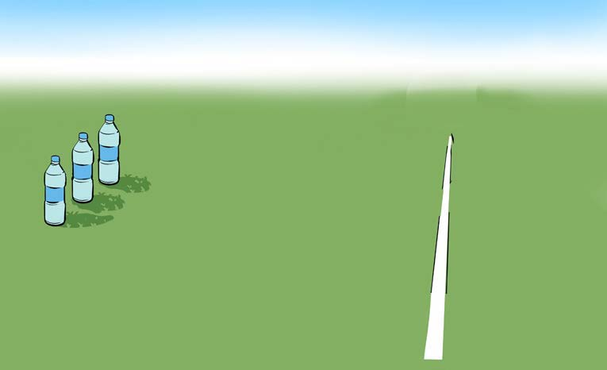
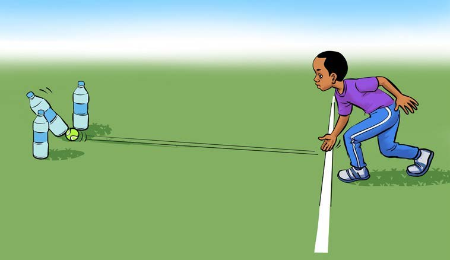
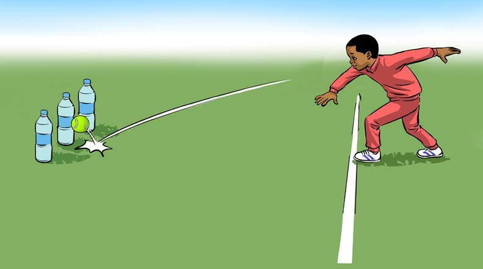
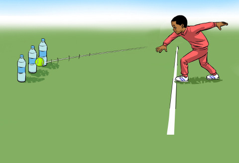
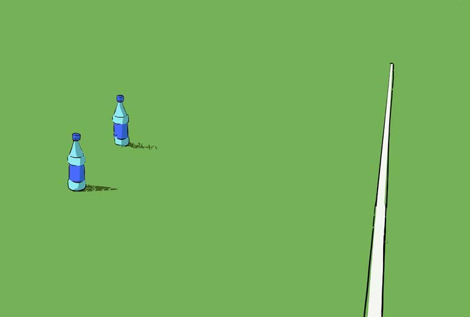
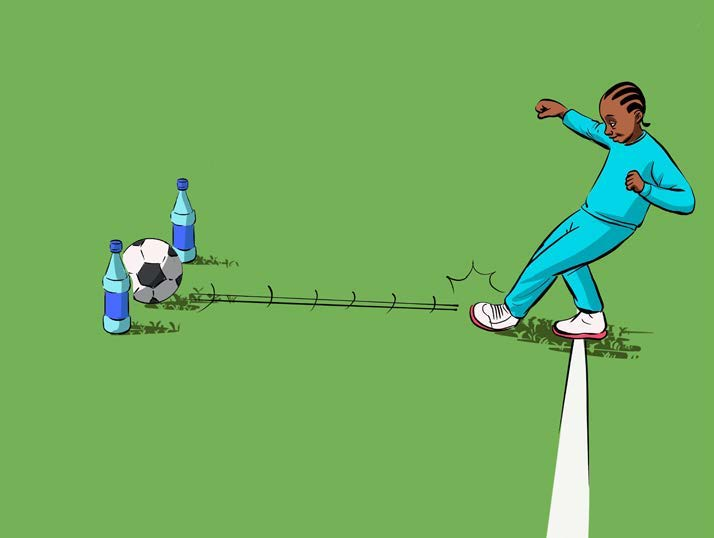
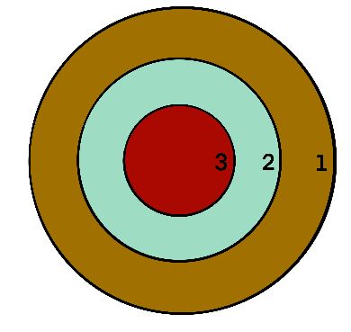
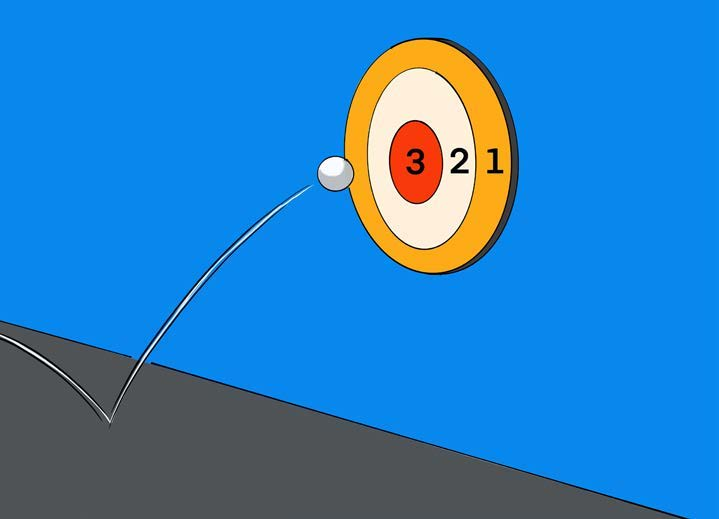

Kulenga shabaha
Kulenga shabaha ni mchezo unaohusisha utumiaji wa mikono au miguu katika kulenga vitu. Wachezaji wanatumia mpira katika kulenga shabaha kwa kuviringisha, kurusha, kupiga kwa mguu na kudundisha.
Namna ya kucheza
Sehemu ya kwanza: kwa kutumia mikono
- Andaa mwili kwa kufanya mazoezi ya kukimbia taratibu kwa dakika 2 hadi 3, kisha zungusha na yumbisha mikono.
- Chagua sehemu ya wazi iliyo salama na tambarare.
- Weka alama mahali utakaposimama. Panga chupa tatu zenye maji au mchanga umbali wa hatua 10 hadi 20 au mita 3 hadi mita 5.

Namna ya kupanga chupa uwanjani - Viringisha mpira na ulenge chupa ya katikati bila kuangusha za pembeni.

Namna ya kulenga chupa kwa kuviringisha mpira - Baada ya majaribio matatu na kurekodi matokeo ya kupata au kukosa shabaha, mwachie mchezaji mwingine.
- Badilisheni na kuanza kupiga chupa kwa kudundisha na kurusha mpira moja kwa moja. Kisha rekodi matokeo.

Namna ya kulenga chupa kwa kudunda mpira 
Namna ya kulenga chupa kwa kurusha mpira
Mchezaji atakayepiga chupa mara nyingi zaidi baada ya kukamilisha njia zote tatu ndiye atakuwa mshindi.
Sehemu ya pili: kwa kutumia miguu
- Andaa mwili kwa kufanya mazoezi ya kukimbia taratibu kwa dakika 2 hadi 3, kisha rukaruka na kunyoosha viungo vya mwili.
- Chagua sehemu ya wazi iliyo salama na tambarare.
- Panga chupa mbili ukiacha nafasi ya kutosha kupita mpira katikati yake.
- Weka alama ya kupigia mpira hatua 10 hadi 20 au mita 3 hadi mita 5 kutoka zilipowekwa chupa.

Chupa zilizopangwa uwanjani - Weka mpira sehemu ya kupigia.
- Piga mpira kwa mguu na kuupitisha katikati ya chupa mbili bila kuziangusha.

Namna ya kupitisha mpira katikati ya chupa kwa kupiga kwa mguu - Rekodi matokeo ya kupata na kukosa shabaha. Baada ya majaribio matatu, mwachie mchezaji mwingine acheze.
- Baada ya kumaliza mzunguko badilisha mtindo wa uchezaji. Anza kwa kukokota na kisha kupiga mpira kwa lengo la kuupitisha katikati ya chupa mbili.
Mshindi ni yule atakayepitisha mpira mara nyingi bila kuangusha chupa.
Sehemu ya tatu: kwa kutumia dango
- Andaa mwili kwa kufanya mazoezi ya kukimbia taratibu kwa dakika 2 hadi 3, kisha fanya mazoezi ya kunyoosha viungo vya mwili.
- Chora dango ubaoni, ukutani au kwenye ubao mpana.

Sehemu za dango - Simama kwenye alama ya kuchezea umbali wa hatua 10 hadi 15 au mita 3 hadi mita 5.
- Rusha mpira wa tenisi ukikusudia kulenga kiini cha dango.
- Alama zitatokana na mahali mpira wako ulipogonga katika dango. Duara la nje ni alama 1, la kati ni alama 2 na la ndani ni alama 3.
- Baada ya majaribio matatu mwachie mchezaji mwingine.
- Badilisheni na kuanza kupiga dango kwa kudundisha mpira wa tenisi.

Namna ya kulenga dango kwa kudundisha
Mshindi ni yule atakayekusanya alama nyingi baada ya mizunguko ya njia zote mbili kukamilika.
Maswali
Shughuli ya pili
Cheza michezo ya kulenga shabaha ukianzia karibu na kuongeza umbali kidogokidogo.